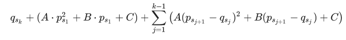

猫国的铁路系统中有N个站点，从1--N编号。小猫准备从1号站点出发，乘坐列车回到猫窝所在的N号站点。它查询了能够乘坐的列车，这些列车共m班，从1--M编号。小猫将在0时刻到达1号站点。对于i号列车，它将在时刻pi从站点xi出发，在时刻qi直达站点yi ，小猫只能在时刻pi上i号列车，也只能在时刻下i号列车。
小猫可以通过多次换乘到达n号站点。一次换乘是指对于两班列车，假设分别为u号与v号列车，若yu=xv并且qu<=pv，那么小猫可以乘坐完u号列车后在yu号站点等待pv-qu个时刻，并在pv时刻乘坐v号列车。
小猫只想回到猫窝并且减少途中的麻烦，对此它用烦躁值来衡量。
小猫在站点等待时将增加烦躁值，对于一次t(t>=0)个时刻的等待，烦躁值将增加a*t*t+b*t+c ，其中a,b,c是给定的常数。
注意：小猫登上第一班列车前，即从时刻0起停留在1号站点的那些时刻也算作一次等待。
若小猫最终在时刻z到达n号站点，则烦躁值将再增加z。
形式化地说，若小猫共乘坐了k班列车，依次乘坐的列车编号可用序列s1,s2....sk表示。该方案被称作一条可行的回家路线，当且仅当它满足下列两个条件：
xs1=1,ysk=n；
对于所有j(1<=j<k)，满足且ysj=xsj+1且qsj<=psj+1 。
对于该回家路线，小猫得到的烦躁值将为：

小猫想让自己的烦躁值尽量小，请你帮它求出所有可行的回家路线中，能得到的最小的烦躁值。题目保证至少存在一条可行的回家路线。
1<=N<=100000
1<=M<=200000
0<=a<=10
0<=b,c<=1000000
1<=xi,yi<=N,xi!=yi
0<=pi<qi<=1000